- Lines vs. Regions: a map of roads, not properties
- How likely is it that intersection can always be meaningful?
- ma: model I vs. model II
 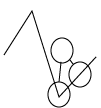
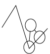 - aligning "conditions" with the direct object
- taking advantage of asymmetric letters and constructions
- Linguistic spell-out
Sets
 Let's start with a bunch of symbols at once. Mee (the two
curvy lines in the upper left) defines a set with the properties
coming off the convex curve on the right side. The elements in the
set come off the concave curve on the left. While looking at this
picture, you should see something like a spreadsheet grid setup.
Let's start with a bunch of symbols at once. Mee (the two
curvy lines in the upper left) defines a set with the properties
coming off the convex curve on the right side. The elements in the
set come off the concave curve on the left. While looking at this
picture, you should see something like a spreadsheet grid setup.
The mou's (the circle with the three lines coming out of it) represent the (unordered) elements. Though not shown in this picture, the values of the properties listed on top (and any other details about the element) would go off the third line to the right.
Also note the mei (one circle with two lines coming out of it) letter toward the bottom. Mei in this context (inside an element list) divides different paradigms or sections. The elements below mei here could correspond or overlap with the elements listed above it. This is useful if there is more than one way to break a set up.
For example, you might have the set of 'animals' which could be broken down taxonimically (mammal, reptile, fish, etc), or by habitat or # of chromosomes or anything else.
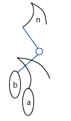
Here we see our first intersection. Mee is intersecting mei. This means that for each element in [a] there is an element [b] in the set [n]. For example, for each US State (the states would be listed at [a]) there are two senators (two elements, senior and junior senator would be at [b]) which make up the set of all senators, n.
Change
Before going on to more complex constructions, let's think about basic sentences. The 'set' construction above allows us to form basic copolla sentences: 'The sky is blue.' 'Dogs are hairy.' Adding the slightest bit of dynamism, the 'sentence' on the right means 'X is changed by A.' Here we see muh (triangle + curved line) used in serial or linear context, where the side with the triangle is connected to the thing that will be changed.
Adding the slightest bit of dynamism, the 'sentence' on the right means 'X is changed by A.' Here we see muh (triangle + curved line) used in serial or linear context, where the side with the triangle is connected to the thing that will be changed.
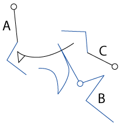 Here, muh means something is selected from C into A (like a Supreme Court justice, or that very juicy looking orange in the pile...). Muh is the unknown element because the way the item is selected is obscured. At the same time we are introduced to the 'biggest' letter, muu (two curvy lines, four straight lines, and a circle). I imagine the joint where the straight and curvy line meet as something like when God touches Adam's hand in the Sistine chapel; or the stylus of the artist, in general. This joint intersects the thing which is consciously manipulated, created, or in this case, selected. B is the one who is doing the selecting.
Entry and Exit
 Let's talk about 'exiting' first, since my diagram is simpler for
that. Exiting is indicated when mi, two straight lines (or
ma, three straight lines) intersects a mei letter
(line-circle-line). ~k coming off of mi is generally
who or what exits--in the past, as a class, what happens
to them, etc.
Let's talk about 'exiting' first, since my diagram is simpler for
that. Exiting is indicated when mi, two straight lines (or
ma, three straight lines) intersects a mei letter
(line-circle-line). ~k coming off of mi is generally
who or what exits--in the past, as a class, what happens
to them, etc.
 ~j is from what was exited. The space created by mi, A, can contain information what what happens when someone/something exits. When ma is used, then the space B is who or what conditions control exit.
~j is from what was exited. The space created by mi, A, can contain information what what happens when someone/something exits. When ma is used, then the space B is who or what conditions control exit.
Ignore the wavy 'l' line. Basically, entry is the same as exit, except that the mei is replaced by mi. All the areas are the same except with respect to entry instead.
If you're interested (you can skip this paragraph), this diagram is really to represent the 'mechanics' of mi--stuff that a 'speaker' of Ouwi would only know subconsciously. 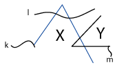 Even though the 'l' line and Y with its intersecting mi are mutually exclusive they are both here so all the permutations are visible at once. There are three rules in the 'mechanics':
- X is what k 'finds.'
- Y is what k 'receives.'
- l is what X is passed to if not to k.
 Pulling it all together, the text on the right describes a 'revolving door'--whenever something exits, something enters.
Pulling it all together, the text on the right describes a 'revolving door'--whenever something exits, something enters.
Tense
The default tense is either the present or abstract/infinitive. Ma generally is used to indicate a verb in this sense. On the other hand, ma intersected in the middle by mi indicates past tense. Looking at the construction and thinking about how ma works, it poses the riddle, "What has no voice, but you have no recourse against it?"
One answer is, "the past." 'A' is the past action--the 'what happened?' B is the when and where. k can be the 'who,' unless k is describing a procedure, in which case α is one instance of when the procedure occurred. l is who or how the action was recorded/witnessed.
On the other hand, ma intersected in the middle by mi indicates past tense. Looking at the construction and thinking about how ma works, it poses the riddle, "What has no voice, but you have no recourse against it?"
One answer is, "the past." 'A' is the past action--the 'what happened?' B is the when and where. k can be the 'who,' unless k is describing a procedure, in which case α is one instance of when the procedure occurred. l is who or how the action was recorded/witnessed.
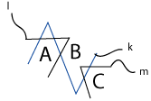
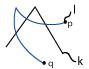
Looping
 This double intersection implies some kind of feedback. It's a kind
of reflexive construction where the action (i.e. verb) will likely
have consequences for similar future actions. Washing oneself is just
reflexive, but investing (e.g. buying a stock) for the purpose of more
money has this kind of feedback loop.
This double intersection implies some kind of feedback. It's a kind
of reflexive construction where the action (i.e. verb) will likely
have consequences for similar future actions. Washing oneself is just
reflexive, but investing (e.g. buying a stock) for the purpose of more
money has this kind of feedback loop.
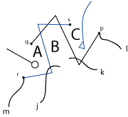
Since this construction has numerous subtleties, let's look at a 'for-do' loop construction where mo radiates from A to make a statement and mu radiates from C to make a condition there. Starting from m, the pseudocode would look something like:
Basically:
A: statement (run each cycle)
B: initialization/instantiation (what is 'run' when first beginning the loop)
C: conditions to continue looping
j: anything that grows the memory stack
k: anything that increases the time of processing
l, m: these lines are more important if A, B, or C are empty, in which case their values come from l and m's contexts.
if (A is undefined) then A=m(r);
if (B is undefined) then B=m(s) OR B=l(q);
if (C is undefined) then C=l(p);
run B;
while (C is true) do {
if (C(k)) then run A(j);
}
Basically:
A: statement (run each cycle)
B: initialization/instantiation (what is 'run' when first beginning the loop)
C: conditions to continue looping
j: anything that grows the memory stack
k: anything that increases the time of processing
l, m: these lines are more important if A, B, or C are empty, in which case their values come from l and m's contexts.
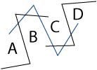
If mu's radiate from B and C then this 'chain-looping' will be the same as tail-recursion.
 When mi double-intersects ma on the first edge, it indicates an 'each other' relationship--i.e. A and B are both assumed to be members of l, and A, as an arbitrary member of the group, does something to B, another member of the group. K should be what the relationship is.
When mi double-intersects ma on the first edge, it indicates an 'each other' relationship--i.e. A and B are both assumed to be members of l, and A, as an arbitrary member of the group, does something to B, another member of the group. K should be what the relationship is.
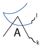Mee intersected by mi indicates that the set in mee (on l), is subject to unexpected change--either the members or the properties depending which line on mee is intersected.


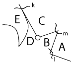
Muu has been discussed above. The joint with one straight line and one curvy line should intersect the thing being 'consciously manipulated.'
A: creator
B: message or concept
C: materials/present situation
D: audience
E: ?goal
A: creator
B: message or concept
C: materials/present situation
D: audience
E: ?goal
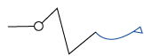


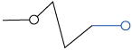


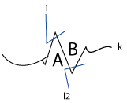


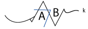

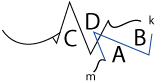
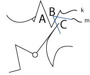
Unresolved Problems (what I'm thinking about these days)
 This should be some kind of reference, but it should only be a
reference for the purposes of conditions, and even that, only when the
parent object is in context--I don't want this to allow people to make
disconnected graphs....or should I be such a dictator?
This should be some kind of reference, but it should only be a
reference for the purposes of conditions, and even that, only when the
parent object is in context--I don't want this to allow people to make
disconnected graphs....or should I be such a dictator?
Recently, I'm thinking it should be something like 'qua' where the free 'tail' of mou is what the particular entity does and the mi captures what they are acting as.

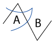
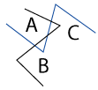
Considering that this evokes both the history and competition, what about 'competing histories' or perhaps any mutually exclusive narratives/ideas, etc? This might take away from the competition-construction's 'territory' though...
 This may make me reconsider how I handle derivatives or scale. Somehow it means m is beyond A, but changing B (or keeping B undetermined). To top it off, I had hopes that this could be used to denote variance in 2D--like geography, etc.
This may make me reconsider how I handle derivatives or scale. Somehow it means m is beyond A, but changing B (or keeping B undetermined). To top it off, I had hopes that this could be used to denote variance in 2D--like geography, etc.
© 2004 Schuyler Duveen